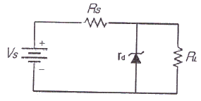
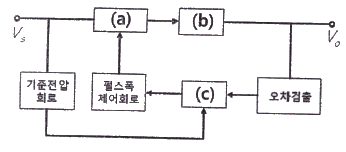
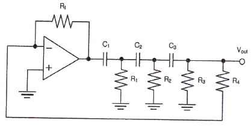
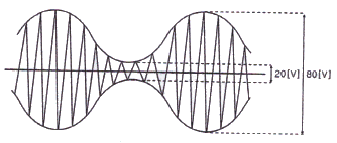
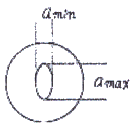
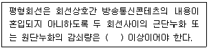

통신선로산업기사 (2020-05-24 기출문제)
1과목: 디지털전자회로
1. 다음 그림의 정전압 다이오드 회로에서 입력이 ±2[V]변화할 때, 출력전압의 변화는? (단, 제너 다이오드의 내부저항은 rd = 4[Ω], 저항은 Rs = 200[Ω] 이다.)

- ±10[mV]
- ±20[mV]
- ±30[mV]
- ±40[mV]
(정답률: 알수없음)

2. 제너다이오드에서 제너전압이 10[V], 전력이 5[W]인 경우 최대전류의 크기는?
- 0.⑤[A]
- 0.5[A]
- 0.⑤[mA]
- 0.5[mA]
(정답률: 86%)
3. 다음 그림은 정전압 기본구성도를 나타낸 것이며, 빈 칸 (a), (b), (c)에 가장 바람직한 회로는?

- (a) 스위칭회로, (b) 오차증폭회로, (c) 필터회로
- (a) 스위칭회로, (b) 필터회로, (c) 오차증폭회로
- (a) 필터회로, (b) 스위칭회로, (c) 오차증폭회로
- (a) 오차증폭회로, (b) 필터회로, (c) 스위칭회로
(정답률: 알수없음)
4. 베이스 공통 증폭회로의 특징으로 틀린 것은?
- 입력저항이 작다.
- 출력저항이 크다.
- 전류이득은 0.96~0.98 정도이다.
- 출력전압과 입력전압은 역 위상이다.
(정답률: 알수없음)
5. 다음 중 공통 컬렉터 증폭기의 특징으로 옳은 것은?
- 입력저항이 매우 작다.
- 출력저항이 매우 작다.
- 전류이득이 매우 작다.
- 입출력간 전압위상을 다르게 할 수 있다.
(정답률: 알수없음)
6. 다음 중 부궤환(Negative Feedback) 효과로 옳지 않은 것은?
- 안정도가 개선된다.
- 이득이 감소한다.
- 왜곡이 개선된다.
- 입력 임피던스가 작아진다.
(정답률: 73%)
7. 차동증폭기의 동위상 신호 제거비(CMRR)를 나타내는 식으로 옳은 것은?
- CMRR = 차동 이득 + 동위상 이득
- CMRR = 차동 이득 - 동위상 이득
- CMRR = 동위상 이득 / 차동 이득
- CMRR = 차동 이득 / 동위상 이득
(정답률: 알수없음)
8. 다음 중 발진기에 주로 사용되는 것으로 출력신호의 일부를 입력으로 되돌리는 것을 무엇이라고 하는가?
- 중궤환
- 부궤환
- 종단저항
- 고이득
(정답률: 알수없음)
9. 다음 회로에서 정현파를 발생시키는 발진기로 동작하기 위한 저항 Rf의 값은? (단, C1=C2=C3=0.001[μF]이고, R1=R2=R3=10[kΩ], R4=5[kΩ] 이다.)

- 5[kΩ]
- 10[kΩ]
- 145[kΩ]
- 290[kΩ]
(정답률: 80%)
10. 다음 중 하틀리 발전기에서 궤환 요소에 해당하는 것은?
- 저항성
- 용량성
- 유도성
- 결합성
(정답률: 알수없음)
11. 진폭변조(Ampiltude Modulation)의 송신기가 그림과 같은 변조파형을 가질 때 반송파전력이 460[mW]이면, 변조된 출력은 몇 [mW]인가?

- 442.8[mW]
- 469.4[mW]
- 524.6[mW]
- 542.8[mW]
(정답률: 91%)
12. 주파수변조(Frequency Modulation) 방식에서 다음 중 주파수 대역폭과 최대 주파수 편이의 관계가 옳은 것은?
- 주파수 대역폭은 최대 주파수 편이의 2배이다.
- 주파수 대역폭은 최대 주파수 편이의 3배이다.
- 주파수 대역폭은 최대 주파수 편이의 4배이다.
- 주파수 대역폭은 최대 주파수 편이의 5배이다.
(정답률: 100%)
13. 펄스의 주기와 진폭은 일정하고, 펄스의 폭을 입력신호에 따라 변화시키는 변조 방식은?
- PAM(Pulse Amplitude Modulation)
- PWM(Pulse Width Modulation)
- PPM(Pulse Position Modulation)
- PCM(Pulse Code Modulation)
(정답률: 알수없음)
14. QPSK에서 반송파의 위상차는?
- π/2
- π
- 2π
- 3π/2
(정답률: 75%)
15. 다음 중 멀티바이브레이터의 특징으로 옳은 것은?
- 파형에 고차의 고조파를 포함하고 있다.
- 부성저항을 이용한 발진기이다.
- 극초단파 발생에 적합하다.
- 회로의 시정수로 신호의 진폭이 결정된다.
(정답률: 55%)
16. 슈미트 트리거 회로에서 최대 루트 이득을 1이 되도록 조정하면 어떻게 되는가?
- 회로의 응답속도가 떨어진다.
- 루프 이득을 정확하게 1로 유지하면서 높은 안정도를 갖는다.
- 스스로 Reset 할 수 있다.
- 아날로그 정현파가 발생한다.
(정답률: 70%)
17. TTL 게이트에서 스위칭 속도를 높이기 위해 사용되는 다이오드는?
- 바랙터 다이오드
- 제너 다이오드
- 쇼트키 다이오드
- 정류 다이오드
(정답률: 90%)
18. 다음 중 순서 논리 회로에 대한 설명으로 틀린 것은?
- 입력 신호와 순서 논리 회로의 현재 출력상태에 따라 다음 출력이 결정된다.
- 조합 논리 회로와 결합하여 사용할 수 없다.
- 순서 논리 회로의 예로 카운터, 레지스터 등이 있다.
- 데이터의 저장 장소로 이용 가능하다.
(정답률: 알수없음)
19. 3개의 T 필립플롭이 직렬로 연결되어 있다. 첫 단에 1,000[Hz]의 구형파를 가해주면 최종 플립플롭에서의 출력 주파수는 얼마인가?
- 3,000[Hz]
- 333[Hz]
- 167[Hz]
- 125[Hz]
(정답률: 72%)
20. 다음 중 Access Time이 가장 짧은 것은?
- 자기 디스크
- RAM
- 자기 테이프
- 광 디스크
(정답률: 알수없음)
2과목: 유선통신기기
21. 전화기의 다이얼 펄스(DP)에서 메이크 접속 시간이 33[ms]이고, 브레이크 접소깃간이 68[ms]이다. 브레이크 율은 약 얼마인가?
- 33.3[%]
- 66.6[%]
- 67.3[%]
- 100[%]
(정답률: 80%)
22. 푸시 버튼 다이얼의 신호 규격 중 신호 송출 레벨의 고군 주파수에 해당 하는 것은?
- -6.0±2.0[dBm]
- -8.0±2.0[dBm]
- -4.0±2.0[dBm]
- -2.0±2.0[dBm]
(정답률: 알수없음)
23. 통신단말기를 접속할 때 사용하는 공유장치에는 모뎀공유장치(MSU), 회선공유장치(LSU) 및 포트공유장치(PSU)가 있다. 이들 공유장치에 대한 설명 중 올바르지 않은 것은?
- 포트공유장치는 모뎀공유장치나 회선공유장치의 대체장비 또는 보충장비로 사용된다.
- 모뎀 공유장치는 여러 개의 단말기들이 하나의 모뎀을 공동으로 이용하도록 하는 장치이다.
- 회선공유장치와 포트공유장치는 모두 호스트 컴퓨터의 포트를 공동으로 이용하도록 하는 장치이다.
- 회선공유장치와 포트공유장치는 모든 단말기마다 별도의 모뎀이 설치되어야 한다.
(정답률: 90%)
24. 화상정보를 데이터베이스를 축적시켜 이를 전화선을 이용하여 상호대화형식으로 필요한 정보로 선택하여 볼 수 있는 유선 쌍방향 화상정보시스템은 무엇인가?
- 텔레텍스트
- 비디오텍스
- CATV
- FAX
(정답률: 알수없음)
25. 화상 통신에 대한 설명으로 옳지 않은 것은?
- 주사 방식은 화소 분해 방식을 사용한다.
- 주사선 밀도는 피치 거리에 비례한다.
- 전송시간은 주사선 밀도에 비례한다.
- 최고화 주파수는 주사선 밀도에 비례한다.
(정답률: 73%)
26. 교환기의 종류와 전송 방식의 짝이 올바르게 않은 것은?
- M10CN 교환기 – 공간 분할 방식
- No.1A ESS 교환기 – 공간 분할 방식
- No.4 ESS 교환기 – 공간 분할 방식
- AXE-10 교환기 - 시분할 방식
(정답률: 알수없음)
27. 다음 중 지능망의 특징으로 옳지 않은 것은?
- 망 서비스 제공 기능의 집중화
- 가입자 정보관리기능의 집중화
- 대량 소품종 특성을 가지는 서비스의 경제적이고 효율적인 제공
- 기존 전화망을 이용해서 다양한 신규 서비스를 경제적, 효율적으로 제공
(정답률: 알수없음)
28. 100명의 가입자를 모두 직통회선(Mesh형)으로 연결할 경우, 총 연결 회선 수는?
- 100
- 1,250
- 4,950
- 10,000
(정답률: 알수없음)
29. 다음 이동통신 시스템과 무선 다중접속 방식의 짝이 올바르지 않은 것은?
- AMPS, FDMA
- IS-95A, CDMA
- IMT-2000, FDMA
- LTE-A, OFDMA
(정답률: 90%)
30. 다음 중 PCM-24 다중화기의 전송속도로 가장 적합한 것은?
- 1.536[Mbps]
- 1.544[Mbps]
- 2.048[Mbps]
- 2.148[Mbps]
(정답률: 알수없음)
31. 다음 중 ADSL에 사용되는 변조방식으로 적합한 것은?
- DMT, CAP
- DMT, 2B1Q
- 2B1Q, CAP
- CAP, PCM
(정답률: 알수없음)
32. 다음 중 네트워크 장비에 대한 설명으로 틀린 것은?
- 게이트웨이는 OSI 7 계층의 응용계층에서 동작한다.
- 브리지는 네트워크에 연결할 수 있는 포트를 2개 가지고 있어 LAN과 LAN의 연결 및 확장하는 기능이 있다.
- 라우터는 패킷 전달을 위해 최적의 경로를 결정한다.
- 리피터는 Star Topology에서 동시에 둘 이상의 Connection이 가능하며 서로 다른 데이터를 주고 받기 위해 필요한 장치이다.
(정답률: 100%)
33. LAN에서 Internetworking 장비에 속하지 않는 것은?
- 라우터
- 리피터
- 브리지
- 프레임 릴레이 스위치
(정답률: 알수없음)
34. 인터넷 환경에서 오류에 관한 처리를 지원하는 용도로 사용되며, IP 패킷의 데이터 부분에 캡슐화되어 송신 호스트에 전달되는 기능을 하는 것은?
- ICMP
- RARP
- UDP
- RTP
(정답률: 알수없음)
35. 광케이블 공사시 특정 위치의 광섬유 손실을 확인하고자 하는 경우에 사용하는 장비는 무엇인가?
- 광원
- OTDR
- 광파워메터
- 광스플리터
(정답률: 90%)
36. 고압 송전선이 광케이블에 인접해 있을 경우 발생하는 현상으로 옳은 것은?
- 누화가 발생한다.
- 유도잡음이 발생한다.
- 통신에 전혀 문제가 발생하지 않는다.
- 누화는 발생하지 않으나 전력유도는 문제가 된다.
(정답률: 87%)
37. 어느 시외전화 선로의 입력 전류가 100[mA]이고, 출력전류가 1[mA]이다. 이 선로의 감쇄량은 얼마인가?
- 20[dB]
- 30[dB]
- 40[dB]
- 50[dB]
(정답률: 100%)
38. 선로의 감쇠량이 20[dB]인 선로에 100[mA]의 전류를 입력한 경우, 이 선로의 출력단 전류는 얼마인가?
- 1[mA]
- 5[mA]
- 10[mA]
- 50[mA]
(정답률: 알수없음)
39. IEEE 표주능로 정한 기준상 LAN 배선공사시 1,000[Mbps] 이더넷 통신에서 사용하면 안되는 케이블은?
- STP CAT5
- STP CAT5E
- UTP CAT6
- UTP CAT7
(정답률: 알수없음)
40. 50/125[μm] 광섬유에서 코어의 굴절률이 1.48이고, 클래드 굴절률차(△)가 1.3[%] 일 때 최대 수광각(θmax)은?
- 12.8[°]
- 13.8[°]
- 16.4[°]
- 28.4[°]
(정답률: 알수없음)
3과목: 전송선로개론
41. 다음 중 선로전송 특성에 관한 설명으로 틀린 것은?
- 1차정수는 선로의 구조에 의해 결정되는 기본정수다.
- 진행파는 송단에서 수단을 향할수록 감쇠가 커져 크기는 적고 위상은 지연된다.
- 반사파는 수단에서 송단을 향할수록 크기는 커지고 위상은 지연된다.
- 선로상의 어떤점에서의 입력임피던스는 거리에 관계없이 특성임피던스와 동일하게 된다.
(정답률: 59%)
42. 다음 중 누화의 특성에 고나한 설명으로 거리가 먼 것은?
- 원단누화는 선로길이에 비례하여 점점 커진다.
- 전송주파수가 낮으면 근단누화가 문제되고 전송주파수가 높으면 원단누화가 문제된다.
- 근단누화는 정전결합과 전자결합의 합으로 되고 원단누화는 그 차로 나타난다.
- 음성주파수는 전송시는 원단누화가 문제된다.
(정답률: 50%)
43. 특성이 서로 다른 2개 이상의 균일한 선로에서 부정합 접속점이 생기면 어떤 현상이 발생되는가?
- 무왜곡이 발생한다.
- 반사가 일어난다.
- 진행파만 존재한다.
- 직접 누화의 원인이 발생된다.
(정답률: 73%)
44. 다음 중 바이폴라(Bipolar) 부호에 대한 특징으로 옳지 않은 것은?
- 파형의 평균값이 0 이다.
- 직류성분이 포함되어 있다.
- 부호 에러의 검출이 가능하다.
- 디지털전송에서 타이밍 회복이 용이하다.
(정답률: 92%)
45. 광대역정보통신을 구현하기 위해 회선교환과 패킷교환의 유연성을 통합시킨 비동기식전달모드 ATM(Asynchronous Transfer Mode)의 기본 셀(Cell)은 몇 바이트(Byte)인가?
- 34바이트
- 53바이트
- 64바이트
- 72바이트
(정답률: 알수없음)
46. PCM 방식의 변조과정에 해당되지 않는 것은?
- 표본화
- 양자화
- 분리화
- 부호화
(정답률: 알수없음)
47. 내수성이 좋으나 종이 절연 케이블에 비해 유전율이 높으므로 케이블을 굵게 해야 하는 단점이 있으나 가볍고 보수가 쉬워 시내 소 쌍 케이블로 사용되는 절연케이블은?
- PE 절연 케이블(PE Insulated Cable)
- 공기 절연 케이블(Air Space Cable)
- 단 절연 케이블(Grade Insulated Cable)
- 실 절연 케이블(Textile Insulated Cable)
(정답률: 100%)
48. 가정이나 사무실에서 인터넷을 연결할 때 일반적으로 사용되는 케이블을 말하며, 차폐연선 케이블과 비교해서 실드 처리가 되어 있지 않고 시공비용을 낮출 수 있는 케이블은?
- UTP 케이블
- STP 케이블
- 동축케이블
- HFC 케이블
(정답률: 92%)
49. 동축케이블의 전송 주파수가 높을수록 신호선 바깥쪽으로만 신호가 흐르려는 특성을 갖게 된다. 이것은 도체를 흐르는 전류의 방향이 급속히 변화하기 때문에 유도기전력(誘導起電力)이 도체 내부에 발생하여, 도체의 중심부에 전류를 흐르기 어렵게 하기 때문이다. 이 현상을 무엇이라 하는가?
- 표피효과(Skin Effect)
- 마스킹효과(Masking Effect)
- 패러데이 효과(Faraday Effect)
- 광기전력 효과(Photovoltaic Effect)
(정답률: 알수없음)
50. 계단형 멀티모드 광섬유 케이블의 굴절률을 측정하였더니 코어의 굴절률이 1.4이고, 클래드의 굴절률이 1.2라고 한다면 이 광섬유 케이블의 비굴절률차는 약 얼마인가?
- 12.48
- 13.37
- 14.29
- 15.65
(정답률: 40%)
51. 광섬유가 단순히 빛을 전파하는 수동적인 기능만을 수행하는 것과는 달리 입력된 광신호를 증폭하는 능동적인 기능을 수행하는 것은?
- POF(Plastic Optical Fiber)
- DSF(Dispersion Shifed Fiber)
- EDF(Erbium Doped Fiber)
- DFF(Dispersion Flatted Fiber)
(정답률: 알수없음)
52. 다음 중 광통신에 사용되는 광선의 성질에 대한 설명으로 틀린 것은?
- 광선은 직진한다.
- 광선의 진행은 스넬의 법칙에 따른다.
- 광선은 다른 광선에 의해 간섭영향을 받는다.
- 광선의 입사각도와 반사각도는 같고 동일한 평면 내에 있다.
(정답률: 알수없음)
53. 표준직경이 50[μm]의 광섬유 케이블에서 광심선 코어가 다음 그림과 같이 찌그러져 최대직경(αmax)이 51.7[μm]이고, 최소직경(αmin)이 48.8[μm]이라면 이 광섬유 코어의 비원율(e)은 몇%]인가?

- e=9.4
- e=7.2
- e=5.8
- e=3.3
(정답률: 86%)
54. LED의 양단자에 2[V]를 가할 때, 100[mA]가 흘러서 2[mW]의 광출력이 나왔다면 전기에서 광으로 바뀌는 LED의 변환 효율은 얼마인가?
- 1[%]
- 2[%]
- 3[%]
- 4[%]
(정답률: 알수없음)
55. 지하관로에 인입 포설시 케이블 중량 5[kg/m], 마찰계수 0.6 포설할 지하 관로길이 250[m] 일 때 케이블의 포설 장력은 얼마인가?
- 500[kg]
- 550[kg]
- 600[kg]
- 750[kg]
(정답률: 알수없음)
56. 선로감쇠량을 측정하기 위하여 송단의 입력전압이 20[dBm], 수단의 출력전압이 0[dBm] 이었다면 감쇠량은 얼마인가?
- 0[dB]
- 5[dB]
- 15[dB]
- 20[dB]
(정답률: 90%)
57. CATV 전송방식인 HFC망에 이용하는 케이블의 종류가 아닌 것은?
- 동축 케이블
- 단일모드 광섬유 케이블
- UTP 케이블
- 다중모드 광섬유 케이블
(정답률: 100%)
58. 다음 중 데시벨 단위에 대한 설명 중 틀린 것은?
- [dBm]은 1[mW] 기준 레벨에 대한 전력레벨을 말한다.
- [dBr]은 1[W] 기준 레벨에 대한 상대 전력레벨을 말한다.
- [dBV]은 1[V] 기준 레벨에 대한 전위레벨을 말한다.
- [dBμV]은 1[μV] 기준 레벨에 대한 전위레벨을 말한다.
(정답률: 80%)
59. 통신용 케이블에서 전자유도 방해에 대한 가장 안정적인 케이블은?
- 폼스킨 케이블
- CCP 케이블
- 광섬유 케이블
- 동축 케이블
(정답률: 알수없음)
60. 다음 중 OTDR을 이용한 광섬유손실 측정시 사용되는 측정 원리는 무엇인가?
- 후방산란법
- 컷백법
- 주파수영역법
- 반사손실측정법
(정답률: 알수없음)
4과목: 전자계산기일반 및 선로설비기준
61. 주 기억장치에 저장된 명령어를 하나하나씩 인출하여 연산코드 부분을 해석한 다음 해석한 결과에 따라 적합한 신로로 변환하여 각각의 연산 장치와 메모리에 지시 신호를 내는 것은?
- 연산 논리 장치(ALU)
- 입출력 장치(I/O Unit)
- 채널(Channel)
- 제어 장치(Control Unit)
(정답률: 알수없음)
62. 2진수 10101101.0101을 8진수로 변환한 것 중 옳은 것은?
- 255.22
- 255.23
- 255.24
- 3E.A1
(정답률: 70%)
63. 수치 데이터의 표현방식에 대한 설명 중 틀린 것은?
- 수치 데이터를 표현할 때는 부호, 크기, 소수점 등을 표시하는데 소수점은 고정소수점 표현방식과 부동소수점 표현방식이 있다.
- 고정소수점 방식에서 정수는 소수점이 수의 맨 왼쪽 끝에 있다고 가정한 것이고, 소수는 소수점이 맨 오른쪽 끝에 있다고 가정한 것이다.
- 소수점이 위치가 어느 한곳에 고정되어 있는 것을 의미하는 것을 고정소수점 방식이라 한다.
- 고정소수점 방식은 주로 정수로 표현하는데 사용된다.
(정답률: 91%)
64. 원시 프로그램에서 나타난 토큰의 열을 그 언어의 문법에 맞도록 만든 트리(Tree)는?
- Parse Tree
- Binary Tree
- Binary Search Tree
- Skewed Tree
(정답률: 60%)
65. 다음 중 운영체제의 기능에 대한 설명이 아닌 것은?
- 사용자와 컴퓨터 간의 인터페이스 기능을 제공한다.
- 소프트웨어의 오류를 처리한다.
- 사용자 간의 자원 사용을 관리한다.
- 입출력을 지원한다.
(정답률: 77%)
66. 컴퓨터가 인식하는 명령어를 논리적으로 순서에 맞게 나열하여, 어떤 기능을 처리하게 해주는 것을 무엇이라고 하는가?
- 하드웨어
- 소프트웨어
- 부울대수
- 논리회로
(정답률: 알수없음)
67. 다음 중 32비트 컴퓨터에서 8 Full Word와 6 Nibble은 각각 몇 비트인가?
- 256비트, 48비트
- 128비트, 24비트
- 256비트, 24비트
- 128비트, 48비트
(정답률: 알수없음)
68. 다음 중 마이크로컨트롤러에 대한 설명으로 틀린 것은?
- ALU와 CU, Register를 포함하고 있다.
- 자동적으로 제품이나 장치를 제어하는데 사용한다.
- 제품군에는 AVR시리즈와 PIC, 8⑤1이 있다.
- 구성요소 중에는 타이머와 SPI, ADC, URAT, RS-232 등의 입출력 모듈도 필요하다.
(정답률: 알수없음)
69. 마이크로프로세서가 직접 이해할 수 있는 프로그램 언어를 무엇이라고 하는가?
- 기계어
- 어셈블리어
- C언어
- Verilog HDL
(정답률: 70%)
70. 명령어의 주소 부분이 그대로 유효 명령어의 주소 필드에 나타나고, 분기 형식의 명령어에서는 실제 분기할 주소로 나타내는 주소 모드를 무엇이라고 하는가?
- 상대 주소 모드
- 직접 주소 모드
- 간접 주소 모드
- 베이스 레지스터 어드레싱 모드
(정답률: 알수없음)
71. 다음 중 정보통신공사업법에서 정하는 통신설비공사의 종류가 아닌 것은?
- 통신선로설비공사
- 교환설비공사
- 정보망설비공사
- 전송설비공사
(정답률: 80%)
72. 다음 중 정보통신기술자의 등급 중 중급기술자의 자격요건으로 옳은 것은?
- 학사 학위를 취득한 사람
- 산업기사 자격을 취득한 사람
- 기능사자격을 취득한 후 4년 이상 공사업무를 수행한 사람
- 기사자격을 취득한 후 2년 이상 공사업무를 수행한 사람
(정답률: 90%)
73. 다음 중 정보통신공사업 관련 용어의 정의가 잘못된 것은?
- “정보통신공사업자”란 정보통신공사업의 등록을 하고 공사업을 경영하는 자를 말한다.
- “발주자”란 공사를 공사업자에게 도급하는 자를 말한다.
- “하도급”이란 도급 받은 공사의 일부에 대하여 수급인이 제3자와 체결하는 계약을 말한다.
- “수급인”이란 용역업자로부터 공사를 하도급 받은 공사업자를 말한다.
(정답률: 알수없음)
74. 다음은 누화에 관한 내용이다. 괄호 안에 알맞은 것은?

- 46 데시벨
- 58 데시벨
- 68 데시벨
- 74 데시벨
(정답률: 알수없음)
75. 선로설비의 회선 상호 간, 회선과 대지 간 및 회선의 심선 상호 간의 절연저항은 직류 500[V] 절연저항계로 측정하였을 때 몇 [MΩ]이어야 하는가?
- 5[MΩ] 미만
- 5[MΩ] 이상
- 10[MΩ] 미만
- 10[MΩ] 이상
(정답률: 알수없음)
76. 다음 중 통신공동구 설치 기준으로 틀린 것은?
- 통신 공동구는 통신케이블의 수용이 필요한 공간과 통신케이블의 설치 및 유지, 보수 등의 작업 시 필요한 공간을 충분히 확보할 수 있는 구조로 설계하여야 한다.
- 통신공동구를 설치하는 때에는 조명, 배수, 소방, 환기 및 접지시설 등 통신케이블의 유지, 관리에 필요한 부대설비를 설치하여야 한다.
- 통신공동구는 관로가 접속되는 지점에는 통신케이블의 분기를 위한 분기구를 설치하여야 하며, 한 지점에서 여러 개의 관로가 분기될 경우에는 작업이 용이하도록 분기구간에는 일정거리 이상의 간격을 유지하여야 한다.
- 통신공동구는 전기, 가스관을 동시에 수용하는 구조로 설계되어야 한다.
(정답률: 90%)
77. 전파에너지를 전송하기 위하여 송신장치나 수신장치와 안테나 사이를 연결하는 선을 무엇이라 하는가?
- 성형배선
- 가공통신선
- 급전선
- 구내간선케이블
(정답률: 91%)
78. 정보통신공사업자가 다른 공사업자에게 하도급하는 경우 그 제한범위를 바르게 나타낸 것은? (단, 정보통신공사업법이 정하는 예외규정은 적용하지 않음)
- 100분의 20을 초과할 수 없다.
- 100분의 30을 초과할 수 없다.
- 100분의 40을 초과할 수 없다.
- 100분의 50을 초과할 수 없다.
(정답률: 91%)
79. 유선, 무선, 광선, 그 밖의 전자식 방식으로 부호·문자·음향 또는 영상 등의 정보를 저장·제어·처리하거나 송수신하기 위한 기계·기구·선로 및 그 밖에 필요한 설비를 무엇이라 하는가?
- 방송통신설비
- 정보통신설비
- 사물통신설비
- 전자통신설비
(정답률: 84%)
80. 정보통신감리원의 인정 및 자격증 관리에 관한 업무를 정부로부터 위탁받아 시행하는 기관은?
- 한국산업인력공단
- 한국건설기술인협회
- 정보통신기술협회
- 정보통신공사협회
(정답률: 알수없음)